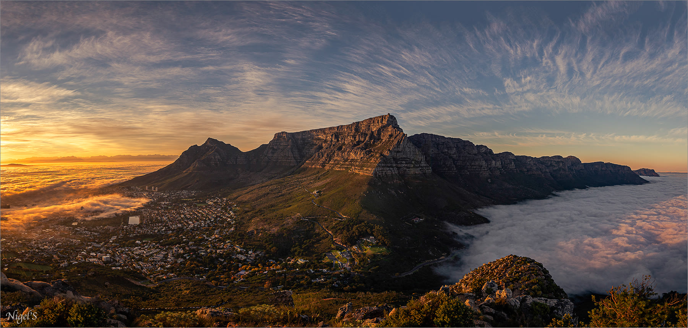
Explore Our Hikes
Find the hike that fits your kind of adventure.
From iconic summits and forest routes to full-day mountain escapes beyond Cape Town, compare the experience first — then choose private, scheduled or on-demand options where available.
Accessible Adventures
Accessible Adventures
Shorter, approachable adventures for active beginners and guests wanting a lighter mountain experience.
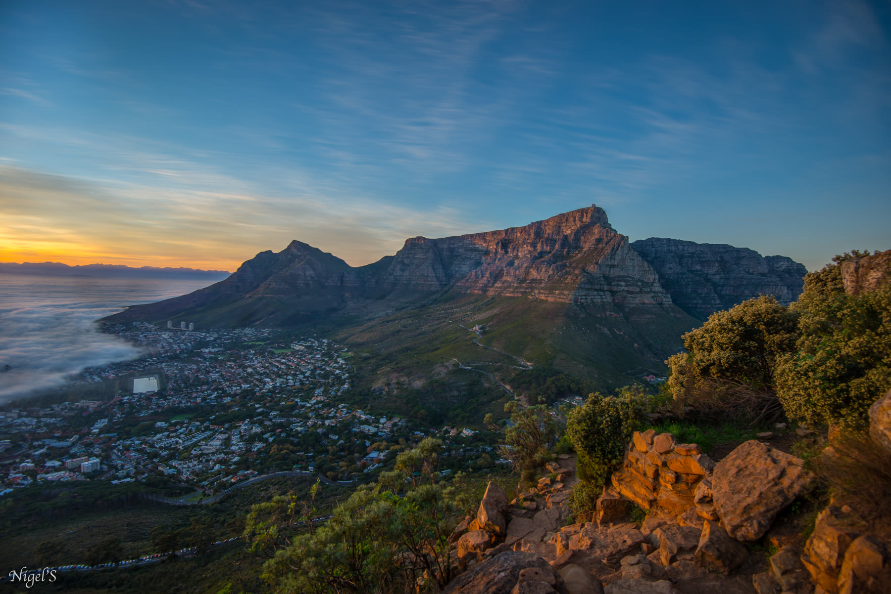
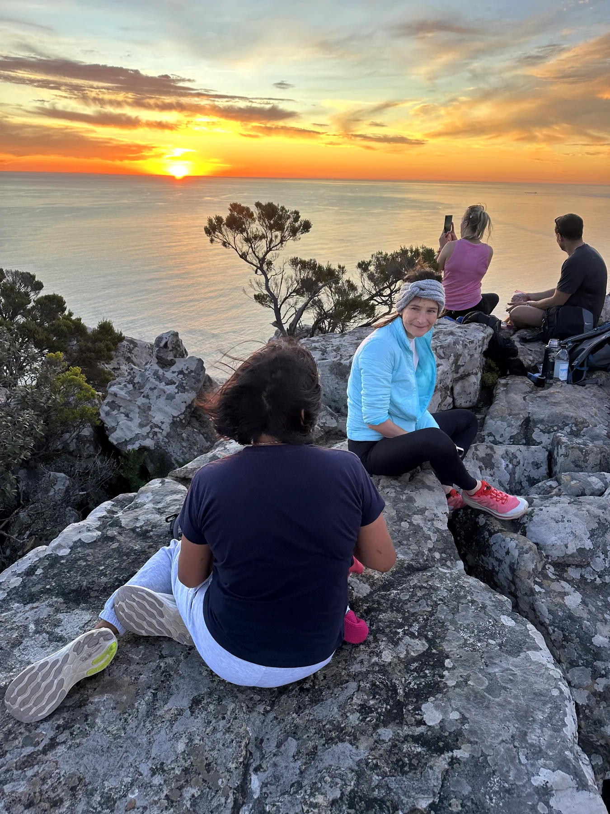
Moderate Adventures
Moderate Adventures
Proper mountain hikes with sustained climbing, uneven terrain or a longer time on trail.
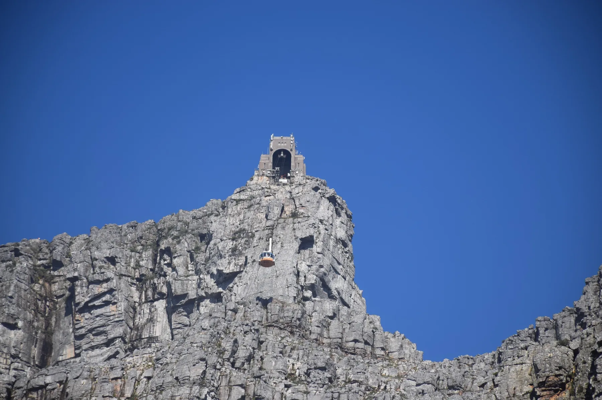
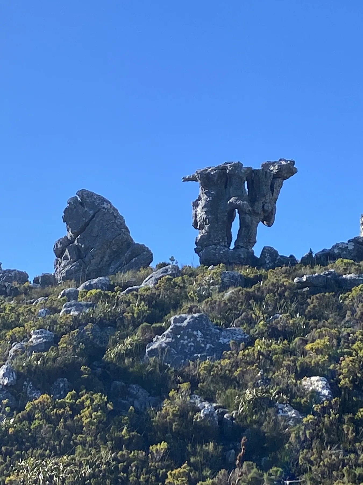
Challenging Adventures
Challenging Adventures
For strong hikers ready for longer days, scrambling, exposure or demanding elevation.

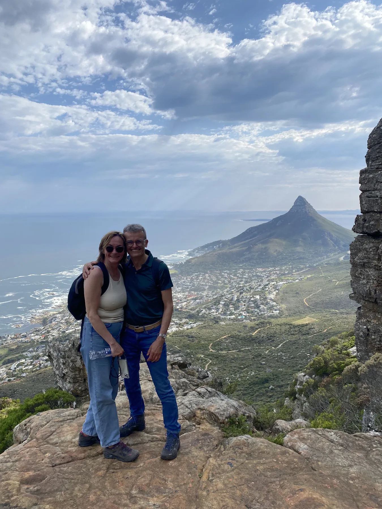
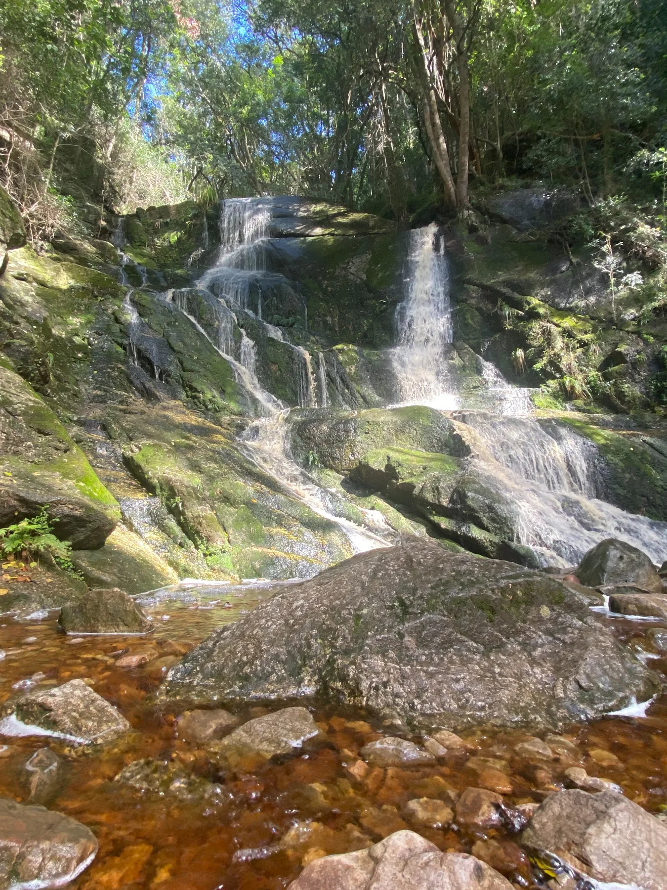
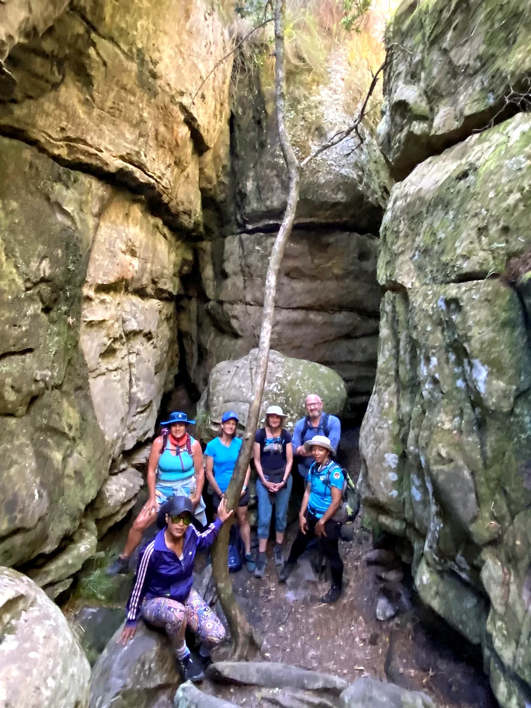
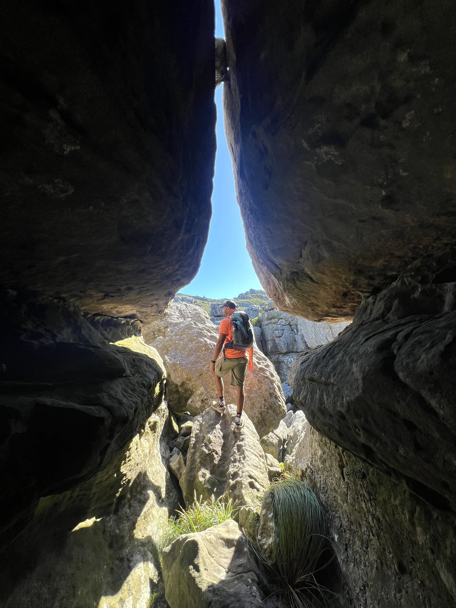
Exclusive Mountain Escapes
Exclusive Mountain Escapes
Special full-day adventures beyond central Cape Town, including our Bainskloof waterfall experiences.
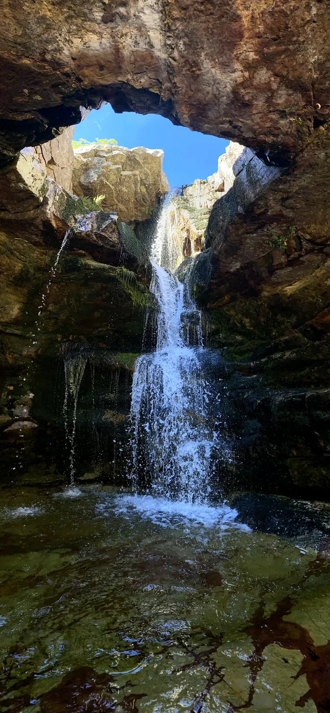
Easy–Moderate · technical adventure
Bainskloof Hidden Waterfall
From R5,500 private group
Explore this hike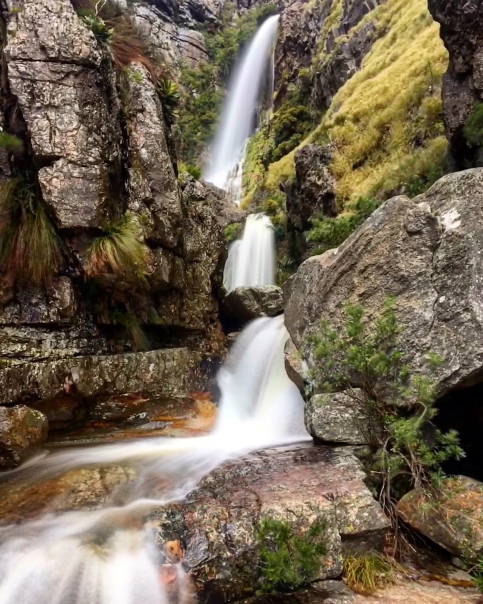
Need help choosing?
Ask Outdoor AddictsTell us your fitness, time and what kind of experience you want.
We’ll help match you to a route rather than simply recommending the hardest or most famous hike.